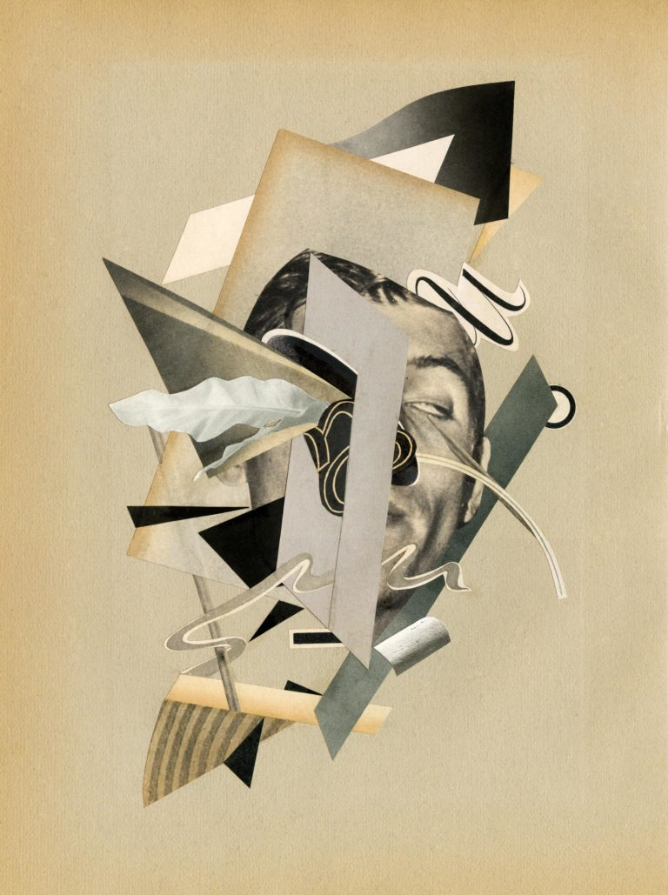
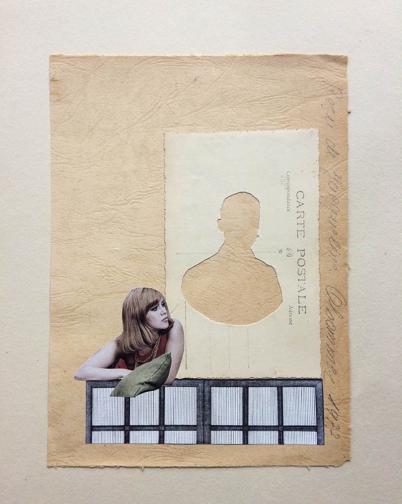
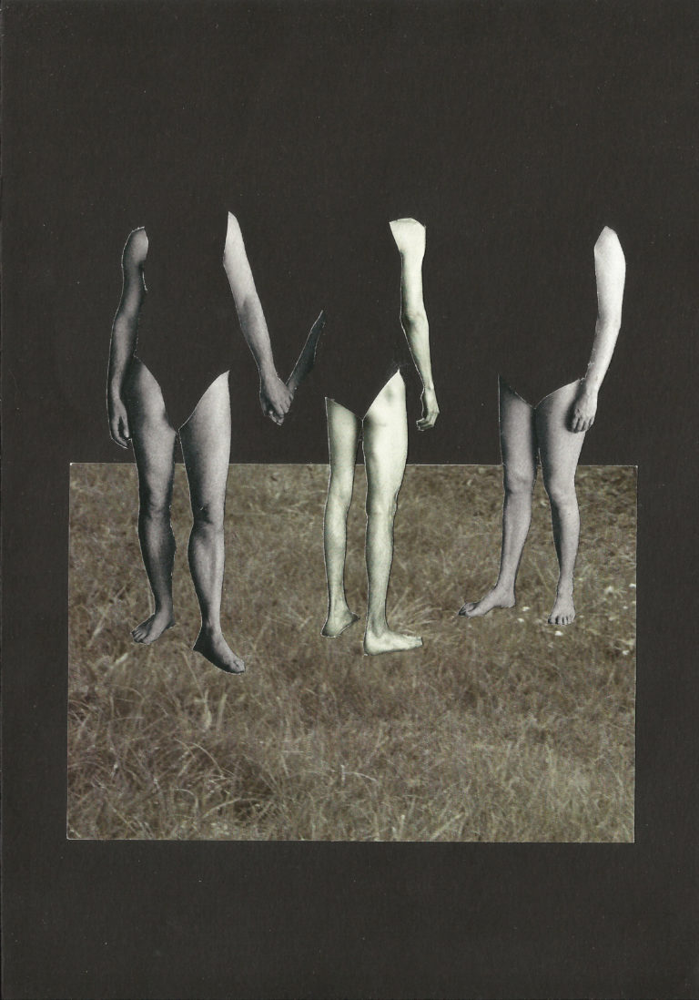
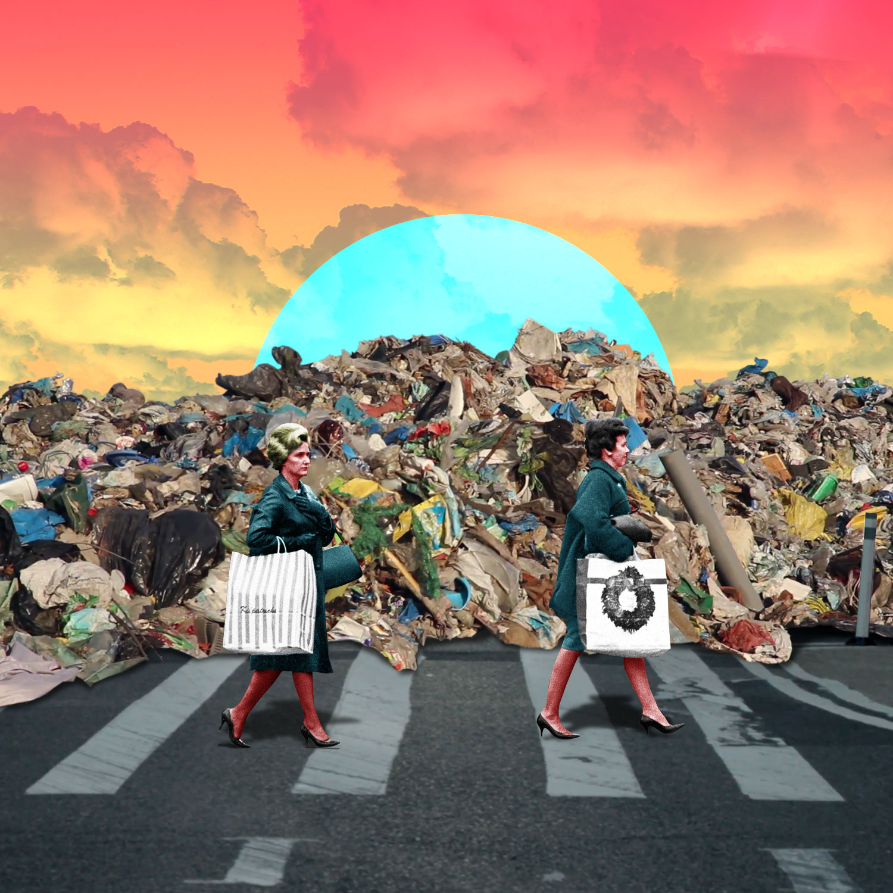
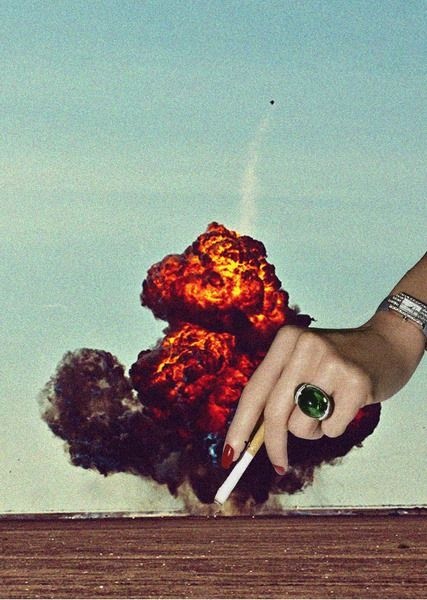

| Bill Ray | Bill Ray, un apodo y juego de palabras (o juego de palabras), esconde a un entusiasta de la imagen nacido en 1981 en Tours, Francia. |  |
|---|---|---|
| Pulina Vega | Estudió en ARTez, Arnhem, Países Bajos, departamento de Arte Libre. Después de graduarse en 1990, trabajó regularmente en Graphic Center Frans Masereel. |  |
| Anita Kos | Nació en Argentina en 1972. Diseñadora gráfica, ilustradora y artista de collages que vive y trabaja en Madrid. |  |
| MiniS | Nació en España en 1972. Es diseñadora gráfica, ilustradora y collagista. Todo su trabajo, tanto gráfico como artístico, irradia una fuerte carga simbólica. |  |
| Andrés González | Es un artista multimedia, activo en varios campos del arte visual: ilustración, cómics, video, cine, escultura, pintura, fotografía y títeres. |  |